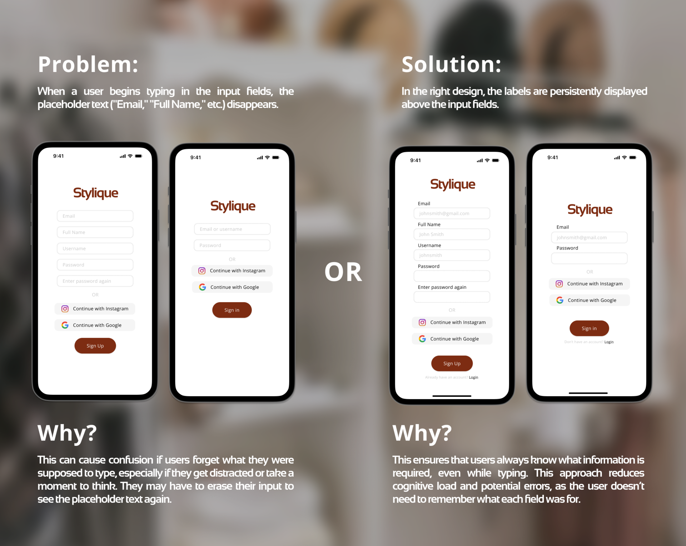
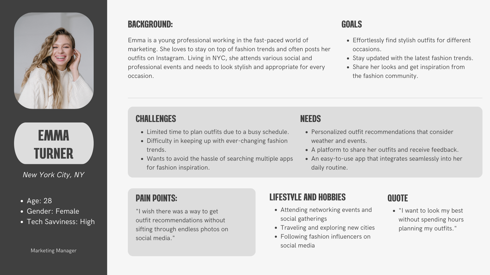
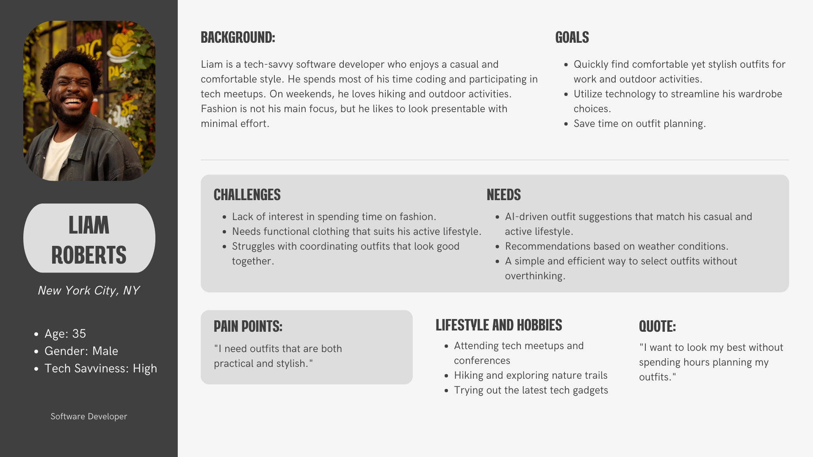
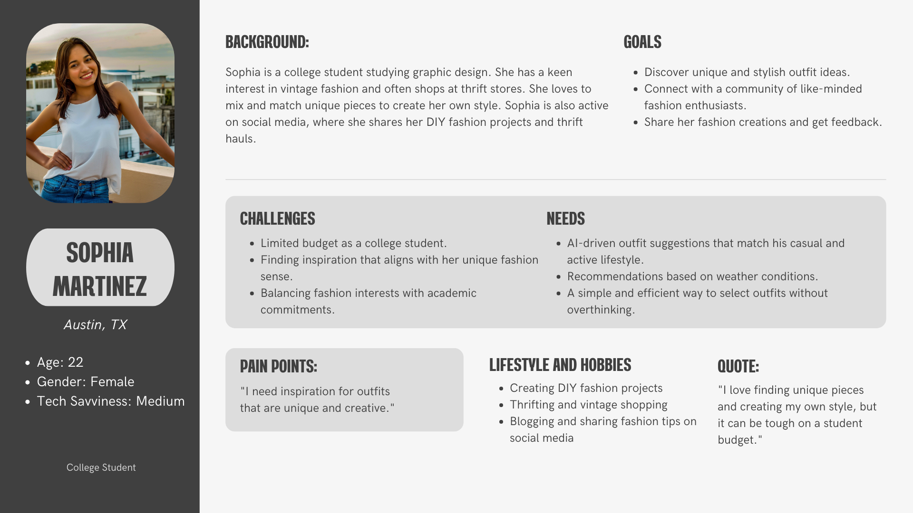

Built an AI-powered outfit recommender that adapts to weather and mood. Designed interaction flows and personalization features to make daily outfit selection intuitive.
My Role: UX/UI Designer — created user journeys, designed high-fidelity UI, and developed interactive prototype.
Project Type
Product Design
Date
May 2024 (In Progress)
Contribution
UI/UX Designer
Agency
Personal Project
Your AI-powered fashion assistant for perfect outfits every day, tailored to your style and mood.
8D4630
FFFFFF
000000
Color Palette
PROJECT OVERVIEW
Challenge
Design a deeply personalized AI wardrobe assistant that solves common frustrations users face when picking outfits — such as weather-inappropriate clothing, lack of coordination, and difficulty organizing digital wardrobes.
Solution
Stylique intelligently recommends outfits using AI, based on real-time weather, wardrobe tagging, and occasion filtering. It also learns from user preferences and provides social features like lookbooks and shareable outfit grids. All product decisions were data-driven, based on scraping and analyzing over 500+ user reviews from competing apps.
Target Audience
Our users are busy Gen Z and Millennial fashion lovers who want to save time, stay stylish, and feel confident. They're early tech adopters who crave personalization, smart automation, and aesthetics — without needing a stylist.

DISCOVER
Understanding User Needs
We conducted in-depth competitive research by scraping over 500 user reviews from Google Play, Reddit, YouTube, and Twitter. This allowed us to extract real frustrations and feature desires from existing users of Whering, Acloset, and Stylebook.
User-Language Insights
Analyzing thousands of comments revealed emotionally charged language that helped shape the tone of the app:
"Feels like dressing a doll" → led to drag-and-drop look creation
"Wish it worked offline" → offline mode added to MVP



IDEATE
Creating a User-Centric Design
I began with rough sketches and wireframes to explore different layouts and interactions. The focus was on creating a seamless flow from receiving outfit suggestions to sharing the final look.
Steps Taken:
- Developed wireframes to outline the user journey.
- Created low-fidelity prototypes in Figma.
- Conducted usability tests to gather feedback and refine the design.
REFINE
Enhancing the User Experience
Based on feedback from usability tests, I iterated on the design to improve the overall user experience. This included refining the visual aesthetics and ensuring the interface was both functional and delightful to use.
Final Steps:
- Implemented a polished visual identity inspired by contemporary fashion trends.
- Conducted a final round of usability tests to ensure the design met user expectations.
SOLUTION
The Ultimate Fashion Assistant
Stylique offers a personalized and effortless way to look your best every day. With AI-driven recommendations and social sharing features, it transforms the way users approach their wardrobe.
Key Features:
- AI personalized outfit suggestions based on weather, preferences, and occasions.
- Easily share outfits with friends and get feedback.
- Customizable profiles to ensure recommendations fit individual styles.
- Stay updated with the latest fashion trends and inspiration from influencers.